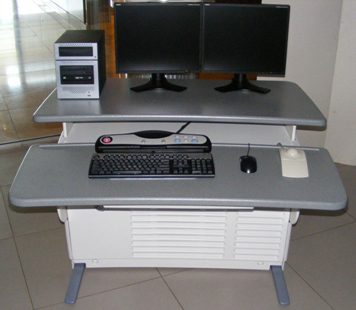
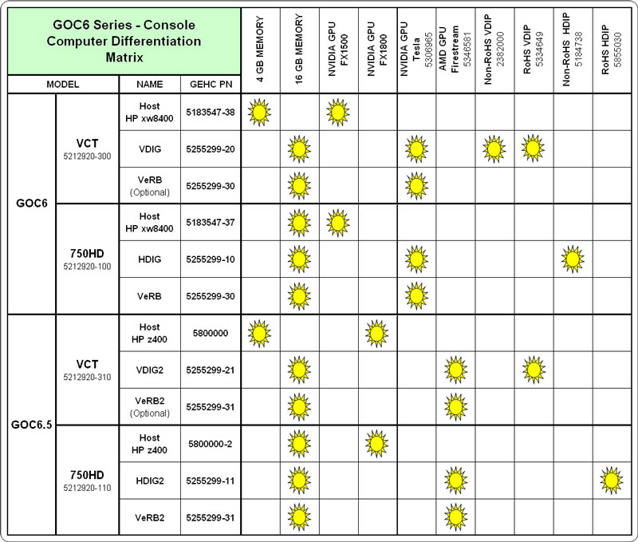
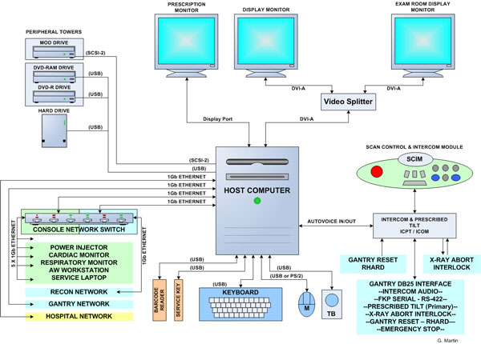
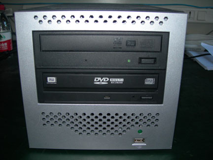
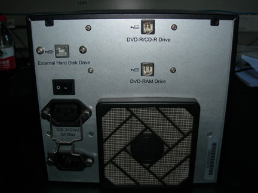
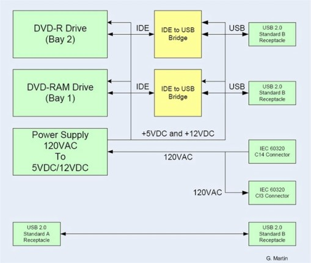
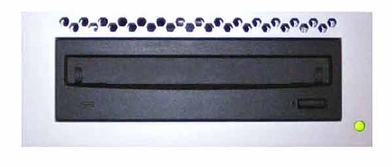
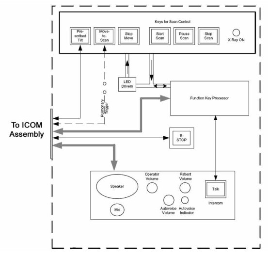
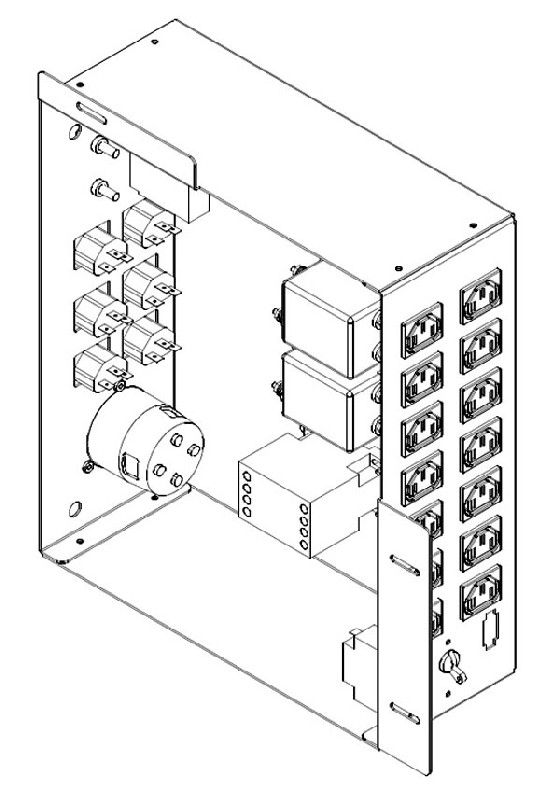
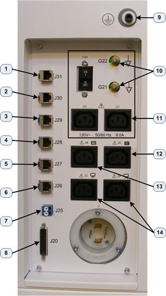

Operating Documentation
Direction 5193574-800, Rev# 22
LightSpeed 7.X Service Methods
Module Version 4.0, Version Date 3/4/11
Operating Documentation |
| Last revised: | 20 February 2011 |
The Global Operator Console Series 6 (GOC 6.5) is the latest version of a continually evolving line of GE Healthcare CT Operator Consoles. Introduced in 2009, this console utilizes new computer technologies to provide system control, high-speed data acquisition, and image generation and reconstruction processes.
| NOTE: | The GOC 6.5 console is architecturally the same as the GOC 6 console. Updates to the Host, DIG and VeRB computers have been taken for ongoing technology and productivity improvements. |
Illustration 1: GOC 6.5 Operator Console

The GOC6 Series console is a small-scale computer cluster controlled by the Host Computer Software. The Host Computer is the master controller of several network-attached computers which receive their operating systems and dedicated applications through the console local network.
The following is a brief overview of the basic computer component groups included with the GOC 6.5.
Table 1: GOC 6.5 Operator Console Components
| GOC 6.5 Console | VCT Consoles | VCT XTe Console | 750HD Console |
|---|---|---|---|
| Hosts Computer (HP Z400) | X | X | X |
| Peripheral Towers (MOD & DVD Towers) | X | X | X |
| Accessories (Monitors, Keyboard, and Mouse and Trackball) | X | X | X |
| System Software | X | X | X |
| Data Acq. & Recon. Control Computer Version 2 (DIG2) | X | X | X |
| Volume Recon. Box Computer Version 2 (VeRB2) | Optional | X | X |
| High Speed Disk Array (HSDA) | X | X | X2 |
| Console Network Switch (CNS) | X | X | X |
| Scan Control I/F Module (SCIM) | X | X | X |
| Intercom Control Module (ICOM) | X | X | X |
| Power Distribution Box | X | X | X |
| Rear Bulkhead Panel | X | X | X |
| Power Switch Panel | X | X | X |
| Cooling Fans | X | X | X |
Illustration 2: GOC6 Series Console Hardware Configuration Matrix

| NOTE: | Hardware Configuration control is critical for proper system operation. Mixing of different generations of Recon Computers may result in image quality issues! Example: DIG and VeRB Computers utilize NVidia GPU's. DIG2 and VeRB2 Computers utilize AMD GPU's. Like type GPU's (NVidia or AMD) must be installed in both the DIG and VeRB Computers in the same console. Mixing of first and second generations DIGs and VeRBs is not permitted. |
The Host Computer in the GOC 6.5 is the master operation controller of the CT system. The Host controls the acquisition, reconstruction, display, archive, and output (i.e. film, DICOM etc.) of patient data and images.
The Host Computer accomplishes these tasks by taking input from the user via keyboard, mouse and trackball and using this input along with the operating and application software loaded on the Host Computer to control and communicate with the component groups responsible for image generation, reconstruction and display. The Host Computer communicates via Gigabit Ethernet interface with the following.
Reconstruction Engine
Gantry/Table
AW Workstation
Hospital Network
Illustration 3: GOC6.5 Host Computer Subsystem Diagram

In the GOC 6.5, the Host Computer is a Commercial Off The Shelf (COTS) PC. The Host Computer video display ports, connected to two display monitors, handle visual display of the Prescription and Display screens. Optionally the Display monitor video signal can be shared with a second Scan Room display utilizing a video splitter/amplifier.
The User keyboard, mouse, and trackball connect with the Host Computer via the standard PS/2 or USB 2.0 interfaces. The Host Computer integrated audio controller is used for the Autovoice feature and interfaces with the ICOM via standard analog audio PC connections on the Host Computer. The Host Computer also interfaces with an external DVD Optical Drive Peripheral Tower via USB 2.0 and an optional external MOD Drive Peripheral Tower via SCSI bus.
| ||||
| There are two different versions of the USB DVD Peripheral Tower. This document pictorially depicting the DVD-RW and DVD-RAM Drive version (Illustrations 1 & 2); and DVD-Multimedia version (Illustrations 3 & 4). The DVD-Multimedia version will accommodate all types of media as long as they are inserted properly. | ||||
Illustration 4: DVD-RW and DVD-RAM Front

Illustration 5: DVD-RW and DVD-RAM Rear

Illustration 6: DVD-Multimedia Front

Illustration 7: DVD-Multimedia Rear

The DVD Peripheral Drive Tower is interfaced to the Host Computer using USB 2.0, instead of the SCSI Bus as on past GOCs. The following block diagram shows this interface and the IDE to USB Bridge adapters needed to connect the more commercially available DVD-R/RW and DVD-RAM Optical Drives.
Illustration 8: PMT-03/-04 DVD Peripheral Drive Tower Block Diagram

DVD-R/RW Drive
The DVD-R/RW drive is an optical storage device used for data interchange (i.e. transfer of data to other systems) and for archiving data (PET only). DVD-R/RW media storage capacity is 4.7GB and is connected to the Host Computer through a USB 2.0 interface. It also supports CD-R media.
DVD-RAM Drive
The DVD-RAM drive is an optical storage device used for archiving data. DVD-RAM media storage capacity is 9.4GB and is connected to the Host Computer through a USB 2.0 interface.
DVD Multimedia (Single Drive Tower)
The DVD Multimedia is an optical storage device used for data interchange (i.e. transfer of data to other systems) and for archiving data. This drive support DVD-R, DVD-RW, and DVD-RAM (without cassette) media.
Illustration 9: MOD Peripheral Drive Tower

The MOD drive is an optical storage device used for archiving data (CT). The MOD drive will no longer be included in the standard Peripheral Tower on the GOC6 Series Consoles. Instead, an optional MOD Drive Tower will be made available and will be contained in its own assembly. The MOD Drive is connected to the Host Computer through a SCSI-II interface, and has a media storage capacity is 2.3GB 512 bytes/sector with a 5.25” form factor.
The GOC 6.5 is equipped with two (2) 19 inch LCD flat panel monitors residing at the Operator Console. An optional display monitor may also be present in the Scan Room. See LCD Video Monitor Overview.
The GOC 6.5 is equipped with PC compatible USB 2.0 101-key keyboard residing at the Operator Console along with the Scan Control Interface Module (SCIM) Assembly. Support for international language keyboards is available optionally. The keys are labeled in languages as identified by GEHC Language Policy 1.14A.. The keyboard is physically attached to the SCIM with the use of a mounting plate, keeping the Operator controls close together.
The GOC 6.5 is equipped with a PC-compatible optical mouse residing at the Operator Console. The mouse connects to the Host Computer via a PS/2 or USB 2.0 interface.
Left button - single click select
Middle button - adjusts image display window width and window level
Right button - scrolling images, magnification, and for accessing hidden menus
The GOC 6.5 is equipped with PC-compatible USB Trackball residing at the Operator Console. The trackball is a 3-button device that connects to the Host Computer through a USB 2.0 interface.
Left button - prior button
Middle button - paging button
Right button - next button
Trackball - The trackball has two functions. The first, while not in the paging mode, adjusts the window width and window level of the image. Moving the trackball left decreases the window width, while moving right increases window width. Moving the trackball down decreases the window level while moving it up increases the window level. While in the paging mode, moving the trackball up pages through the sequence from beginning to end at a rate dependent on the speed at which you move the trackball. Moving the trackball down pages through the sequence from end to beginning at a rate dependent on the speed at which you move the trackball.
Like previous GOCs, the GOC 6.5 console is loaded with a Linux-based Operating System (OS) and GE Healthcare CT Application (APPS) software. New for GOC 6 Series is the introduction of a 64-bit version of the Linux Operating System Software.
The following block diagram illustrates the general software architecture used with the GOC 6.5 console. Unlike previous generations of consoles, all operating and application software is resident on the Host Computer for all the other client computers (e.g., DIG2 and VeRB2). The OS and Application software modules are remotely accessed by their respective computer components through the Console Network Switch (CNS). This is accomplished using Linux Pre-boot Execution Environment (PXE) support for network booting of computers.
DHCP and FTP Servers running on the Host Computer, and Bootloader ROM with PXE on the Network Interface Card (NIC) in the client computer, communicate just after the POST and BIOS routines are finished. The DHCP server assigns IP addresses and the FTP server downloads the applicable OS and Application software to the client computer memory. The client computers then begin execution of this software to fulfill its function in the GOC 6.5 console.
Illustration 10: Software Overview Block Diagram

To support the GOC 6.5 console, the following Operating Software (OS) is required:
Lightspeed VCT XT / XTe: GEHC/CTT Linux, Production release “CTT prod-5.3.11”.
Discovery CT 750HD: GEHC/CTT Linux, Production release “CTT prod-5.3.11”.
Application Software (APPS) versions will vary based on CT System type. Refer to the Software section of the particular service methods publication for more details.
The Reconstruction Engine is the component group responsible for data acquisition and reconstruction processes. Depending on system implementation (VCT verses VCT XTe, and/or optional processing capabilities) some components may or may not be included in this group. See Table 1.
The following illustration shows a fully equipped Reconstruction Engine used on the VCT XTe consoles.
Illustration 11: Reconstruction Engine

The Data Acquisition and Image Generation Computer Version 2 (DIG2), used on all configurations of the GOC 6.5, is a custom designed computer based on the Intel x86 multi-core processor server platform and manufactured by a third party vendor for GE Healthcare.
The DIG2 Computer will have two configurations based on system utilization. The primary difference in the two DIG2 Computer configurations is based on the type of DAS Interface Processor (DIP) board installed inside the DIG Computer.
| DIG2 Computer Configuration | CT750 HD | VCT & VCT XTe |
|---|---|---|
| HDIG2 | X | |
| VDIG2 | X |
The DIG2 computer serve two purposes: raw scan data save and image generation. The raw scan data is transmitted from the Data Acquisition Subsystem (DAS), across the Slip Ring, to the DIG2 computer. The DIG2 Computer saves this data to a High Speed Disk Array (HSDA) and later retrieves it for image reconstruction. Image reconstruction is performed on DIG2 Computer native processors and an add-in GPU card.
| NOTE: | The Data Acquisition and Reconstruction Computer (DARC) and the Image Generation Computer (IG) previously performed these functions in earlier versions of GOC configurations. |
The DIG2 Computer communicates with the Host Computer through the Console Network Switch (CNS) and is remotely booted through this connection. Once operational, the DIG2 Computer controls patient data acquisition and raw data storage. See DIG2 Theory.
The Volume Reconstruction Computer Version 2 (VeRB2), used on some of the configurations of the GOC 6 Series consoles, is a custom designed computer based on the Intel x86 multi-core processor server platform and manufactured by a third party vendor for GE Healthcare. The VeRB2 computer serves multiple purposes depending on system implementation.
With the High Definition consoles, the VeRB2 is utilized for performing volume Adaptive Statistical Iterative Reconstruction (ASiR) function. In addition the VeRB2 Computer provide Image Generation Frame Rate enhancement. It receives raw data from the DIG2 and the ASiR function is applied to this data and transferred to the host computer.
The VeRB2 Computer communicates with the Host Computer through the Console Network Switch (CNS) and is remotely booted through this connection. Once operational the VeRB2 Computer performs image generation and reconstruction processes controlled by Host Software Subsystem. See VeRB2 Theory.
The High Speed Disk Array (HSDA) supports the scan data acquisition function. Raw scan data is saved on the HSDA for buffering and temporary storage and then restored for image reconstruction. The HSDA has a 10/100 Ethernet interface for remote monitoring and maintenance functionality. See High Speed Disc Array (HSDA) Theory.
The Console Network Switch (CNS) resides in the left compartment of the GOC 6.5 console. This hardware provides Gigabit Ethernet connectivity between the computer elements of the Reconstruction Engine and the Host Computer, as well as the Host Computer and its external network connections.
The switch acts as a high-speed selective bridge between the different computers in the GOC 6.5 console. The switch, without interfering with any other segments, automatically forwards traffic that needs to go from one computer to another. In the GOC 6.5 console, the CNS is configured (by Ethernet wiring) with two (2) subnets, one for the Host/Reconstruction Engine and the other for the Host/External connections. By configuring the Operator Console Ethernet wiring in a specific manner, the data traffic for internal verses external processes are isolated.
There are two version of the Console Network Switch which are very similar models. Both version are wired and function the same. Small differences primarily dealing with Port Activity LEDs can be seen in the following illustrations.
| ||||
| UNDER NO CIRCUMSTANCE SHOULD THE EXTERNAL HOSPITAL BACKBONE EVER BE CONNECTED TO THE CNS. THE HOSPITAL BACKBONE MUST BE CONNECTED VIA THE CONSOLE REAR BULKHEAD TO THE HOST COMPUTER. | ||||
Illustration 12: Console Network Switch (5263798) Connections

Illustration 13: Console Network Switch (5263798-2) Connections

The Scan Control Interface Module (SCIM) along with 101-key keyboard supplies the user with the necessary inputs for performing scans. The SCIM supplies a series of switches that allows the user to position the patient using Positioner (Gantry/Table) subsystem without leaving the console and entering the scan room. (See Illustration 14 for SCIM functions.)
Illustration 14: Scan Control Interface Module (SCIM)

| Item | Function |
| a | E-Stop Button |
| b | X-Ray ON Indicator |
| c | Speaker |
| d | Microphone |
| e | Talk Button |
| f | Patient Speaker Volume Control |
| g | AutoVoice Volume Control |
| h | Operator Speaker Volume Control |
| I | Start Scan Button |
| j | Pause Scan Button |
| k | Stop Scan Button |
| l | Move to Scan Button |
| m | Stop Move Button |
| n | Prescribed Tilt Button |
| o | AutoVoice ON Indicator |
The SCIM connects directly to the ICOM assembly located in the GOC 6.5 console to supply scan, intercom and safety features provided by the SCIM. (See Illustration 15.
Illustration 15: SCIM Block Diagram

The Intercom (ICOM) assembly (Illustration 16) translates five functions and miscellaneous signals between the console and gantry:
Bi-directional audio - Host Computer and SCIM
Table/gantry motion control - SCIM
Gantry reset - DIG2 Computer
X-ray abort - DIG2 Computer [DAS Interface Processor Add-in card (DIP)]
Console power indicator - ICOM
This information is sourced/received by the above computers and transferred through a single 25-pin cable to/from the gantry.
Illustration 16: ICOM Assembly

The Intercom block enables communication between the console operator and the patient on the table. The communication direction through the Intercom can be switched by depressing the TALK button on the SCIM keyboard. The operator can speak to the patient by depressing the TALK button (ON). When the TALK button is released (OFF) the operator can then listen to the patient.
When Auto-voice is playing, the operator can listen through the Console speaker on the Auto-voice R channel while the TALK button is released (OFF). At the same time the patient can listen through the Table speaker on the Auto-voice L channel.
If the operator depresses the TALK button (ON) while Auto-voice is playing, the Intercom will disable the Auto-voice sound and will switch the sound source to the Console microphone output. The Console microphone output is amplified and routed to the Host computer's audio input for the Auto-voice recording. The Auto voice recording will be managed by the host computer's software. It will be up to the software to start and stop recording the sound.
Illustration 17: Intercom Functional Block Diagram

The Prescribed Tilt circuit block will detect the status of the TILT push button in the SCIM keyboard as it is pressed or released (NO - Normal Open; NC - Normal Closed respectively) by the use of two independent paths. An invert logic signal condition (XOR) in between these two paths is used to determine the tilt condition. The pulse width of both signals shall be the same when the push button is pressed. Once the signals are received, the dual signal (redundant path) will be transmitted to the TGP board so than a single point of failure will not cause tilt motion.
The Prescribed Tilt circuit performance requirements are specified in the following:
One push button switch double-pole double-throw. The button has six contacts. Contacts 1-3 are used for primary (Hardware) path. Contacts 4-6 are used for secondary (Firmware). See Illustration 18.
Illustration 18: Prescribed Tilt Requirements

The Prescribed Tilt block detects the condition of the DPDT button in the SCIM keyboard (either press or release) by using two independent paths. These two paths have an inverse logic condition between them and both signals must remain constant for the same period of time while the button is pressed.
No single wire can cause Tilt motion. If one of two wires fails, the circuit will not cause tilt.
The circuit receives dual signals and generates two independent differential signals that are sent to the TGP board. The output remains active as long as the button is pressed.
The defined Voltage level of the Prescribed Tilt signal is no greater than 5V.
The Reset block will receive and detect the serial break command from the Host computer serial port expander (RS-232), and then generate another pulse, which will be sent to the TGP board in the Gantry. Its performance requirements are illustrated below:
The Serial port expander interface sends a minimum RS-232 serial break command of 4mA and 8.1V in order to generate the Gantry Reset signal.
The Gantry Reset circuit responds to any pulse with a width longer than 200ms and will not respond to any pulse with a width less than 150ms.
Once the serial break command has been detected the output of the Gantry Reset circuit will be differential, an active high pulse signal, from 0VDC to +5VDC, with a width no less than 100ms.
There are four LEDs and five Test Points (see Table 2) on the board to detect the errors in the events of Gantry Tilt and Reset failures.
Table 2: Prescribed Tilt Circuit LEDs
| LED Indicators | Color | Description |
| Tilt_1 (First Path), DS7: | YELLOW | Lit when the path1 output pulse is sent to the TGP board. |
| Tilt_2 (Second Path), DS8: | YELLOW | Lit when the path2 output pulse is sent to the TGP board. |
| GR_IN (Input Detection), DS5: | YELLOW | Lit when any active high input pulse-signal. |
| GR_OUT (Gantry_Reset pulse), DS6: | YELLOW | Lit when the reset output pulse is sent to the TGP board. |
| Test Points | ||
| TP5 (Prescribed_Tilt Circuit): | Output Second path pulse-width signal | |
| TP6 (Prescribed_Tilt Circuit): | Output first path pulse-width signal | |
| TP10 (Gantry_Reset Circuit): | Input pulse-width signal | |
| TP8 (Gantry_Reset Circuit): | Output pulse-width signal | |
| TP4 (Entire Board Design): | Digital Ground | |
| TP9 (Gantry_Reset Circuit): | Falling-edge signal detection | |
In the Prescribed tilt circuit the LED Tilt_1 and Tilt-2 will always be either both ON (when the tilt button is pushed and hold) or both OFF (when the button is released). In any other cases, it means that one of the two paths is not working properly. Refer to Table 3 for more details.
In the Prescribed Tilt circuit the test points TP12 and TP13 are provided to measure a pulse signal (active high). This pulse signal must be present only when the button in the SCIM keyboard is pressed, and in both test points the width of the pulse should be the same.
Table 3: Gantry Tilt LED Status
| Tilt Button | LED Tilt 1 | LED Tilt 2 | Error Detection |
| Pushed | OFF | OFF | Both paths are not working properly |
| Pushed | OFF | ON | Path 1 is not working properly |
| Pushed | ON | OFF | Path 2 is not working properly |
| Pushed | ON | ON | Both paths are working properly |
| Released | OFF | OFF | Both paths are working properly |
| Released | OFF | ON | Path 2 is not working properly |
| Released | ON | OFF | Path 1 is not working properly |
| Released | ON | ON | Both paths are working properly |
In the Gantry Reset circuit, the LED GR_IN is lit for the same amount of time as the input pulse width. This LED detects if there is any known missing input signal or malfunction of the opto-isolator. In addition, the test point TP9 is used to measure the RS-232 (serial break command) pulse-width of the input signal.
In the Gantry Reset circuit, if the input pulse width is greater than 200ms, an active low edge will be detected on TP8. If the input width is less than 150ms, TP8 will remain active High.
In the Gantry Rest circuit, the LED GR_OUT is lit for approximately 150ms when a Gantry_Reset signal is sent out. The test point TP10 measures output reset signals with a pulse width less than 100ms.
The NGPDU I/F block has a mechanical relay circuit, which supports the PDU_24 and SYSLITE signals coming from the Gantry.
NGPDU I/F Circuit Operation:
The NGPDU I/F circuit block shall handle the following signals:
PDU_24 +24Vdc input from the Gantry (TGP).
SYSLITE +24Vdc output to the Gantry (TGP).
These signals will be connected to their respective terminals on the mechanical relay. The mechanical relay will always be ON during power-on of the ICOM board for HPower.
The NGPDU circuitry is not used for H16 or older systems.
The Operator Console main power switch, along with Service Ethernet and USB ports, are located on the Power Switch Panel. The Power Switch is the main operator power On/Off control for the console and is accessible from the front of the Operator Console.
Illustration 19: Console Power Switch

| NOTE: | It is important to understand that this switch does not
completely remove power from the console, but switches power On/Off
to key components. Always follow appropriate Lock Out / Tag Out procedures
when working in and around the Operator Console. For cabling details, refer to the appropriate interconnect located in the System Diagrams folder of this service methods publication. |
The Power Distribution Box (or Outlet Box) in the left compartment of the Operator Console is responsible for distributing AC Power to the components in the GOC 6.5 console. Incoming power from the Power Distribution Unit (PDU) of the CT System is 2-phase 208 Vac. This incoming 2-phase AC power is routed through Line Filters and Circuit Breakers and then sent to numerous IEC power outlets in a load-balanced manner.
Illustration 20: Power Distribution Box

| NOTE: | It is important that the console components be connected to specific power outlets on the Power Distribution Box to maintain proper power load balance. |
Table 4: Console Circuit Breakers
| Circuit Breaker | Location | Purpose | Components |
|---|---|---|---|
| CB 1 | Inside console on Power Distribution Box | To protect components plugged into the internal AC Power IEC outlets on Power Distribution Box. (J12 - J19) | Recon Engine Subsection |
| DIG2, VeRB2, HSDA 1, Video Amp, and Spare | |||
| CB 2 | Inside console on Power Distribution Box | To protect components plugged into the internal and external AC Power IEC outlets on Power Distribution Box. (J2 - J11) | Host Subsection |
| Note: Also protects the console power-on switch contactor’s coil. If contactor fails, J2- J19 will be de-energized. | Host PC, CNS, Console Monitors, Scan Room Monitor, Peripheral Towers, MODEM, ICOM and Console Chassis Fans | ||
| CB 3 | Outside console on Power Distribution Box at Rear Bulkhead Connection Panel | To protect Accessories plugged into the external AC Power IEC outlets on Bulkhead Panel. (J21 - J22) | Accessories |
| Ex: RPM, Injector |
| NOTE: | It is important to understand that only method to completely remove power from the console is with the removal of the Twist-N-Lock Power Connector on the rear Console Bulkhead Panel. The Circuit Breakers on the Power Distribution Box and the Console Power Switch only switch different circuits in and out of the energized state. Power is still present in the Power Distribution Box with the Circuit Breakers and Console Power Switch turned off! |
| ||||
| THE ACCESSORY POWER OUTLETS ARE ONLY TO BE USED FOR GE HEALTHCARE APPROVED ACCESSORIES! | ||||
Table 5: Power Distribution Box Interfaces
| Connector | Power or Signal | Purpose | Connector |
|---|---|---|---|
| J1 | 208 VAC, 2 θ (phase) | Incoming power for Console | HUBBELL FLANGED INLET HBL 2415 |
| J2-J19 | 120 VAC, 1 θ | Output power for Console components | IEC Power connector, female |
| J21-J22 | 120 VAC, 1 θ | Output power for Accessory components | IEC Power connector, female |
| J23 | 120 VAC, 1 θ | Console Power Switch | MATE-N-LOK 3-position |
| J24 | 24 VDC | “SYSLITE” - PDU notification that Console power state (On/Off) | MATE-N-LOK 2-position |
For cabling details, refer to the appropriate interconnect located in the System Diagrams folder of this service methods publication.
The main communication interface between the console and the rest of the CT System can be found at the rear of the Operator Console. The Bulkhead Panel supplies Ethernet, Gantry/Table and DAS Fiber Optical cable connections. These connections supply pass through points for the console and the connectors are of the type (requiring cables connections on both sides) so that the Rear Bulkhead Panel connectors may be easily replaced in the event that a connector is damaged.
Illustration 21: Console Rear Bulkhead Panel Connections

| Connection | Description - GOC6.5 | Connection | Description - GOC6.5 |
| 1 | RPM (J31) | 8 | Gantry (J20) |
| 2 | EKG (J30) | 9 | Main Console Ground |
| 3 | AW (J29) | 10 | Accessory Grounds (G21 & 22) |
| 4 | Veo (J28) | 11 | Accessory Power Outlets |
| 5 | TGP (J27) | 12 | DVD Peripheral Tower Power Outlet |
| 6 | Hospital (J26) | 13 | Spare |
| 7 | Slipring (J25) | 14 | Console Monitor Power Outlets |
The GOC 6.5 console is equipped with six (6) Cooling Fans, three (3) on each side of the rear console cover. These fans are 120 Vac fans mounted in a manner that draws cooling air from the front of the Operator Console, through the console and exhausting out the back. For proper thermal control, it is important that these fans remain operational and that adequate ventilation is provided. Refer to the Pre-Installation Manual for proper clearances.
Illustration 22: Console Rear Cooling Fans